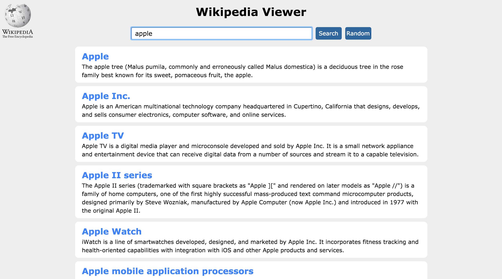
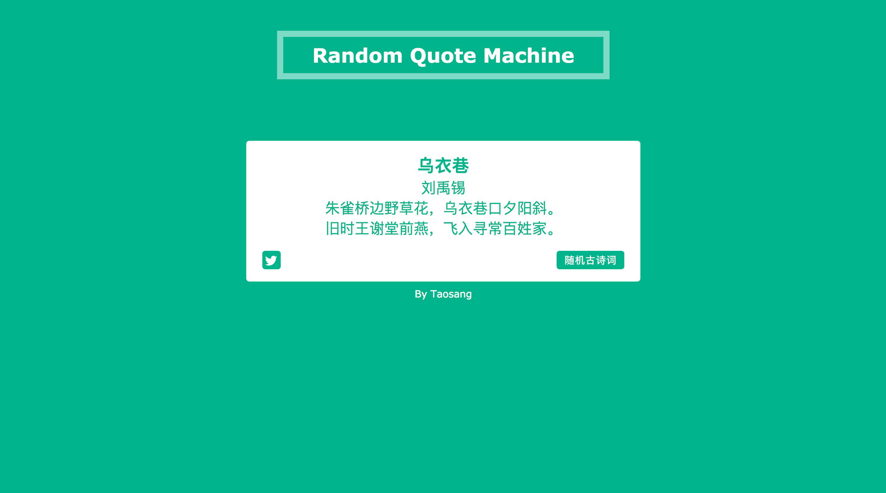
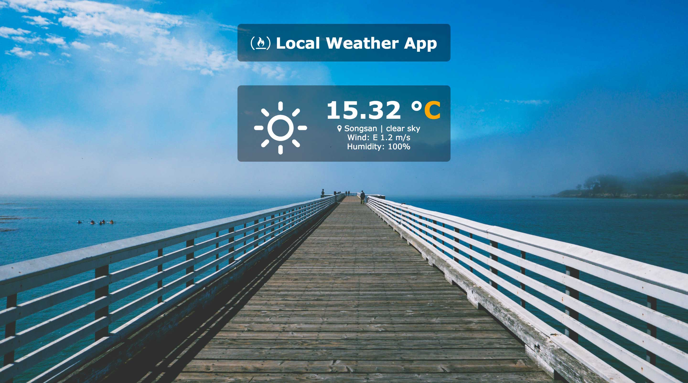
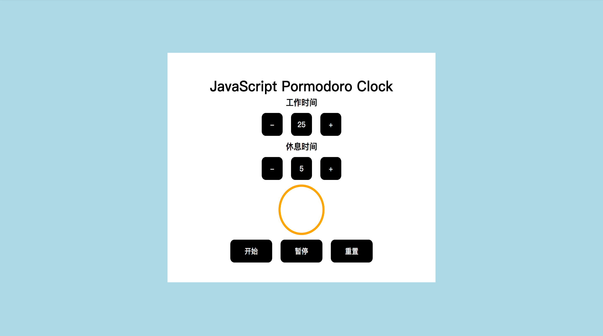
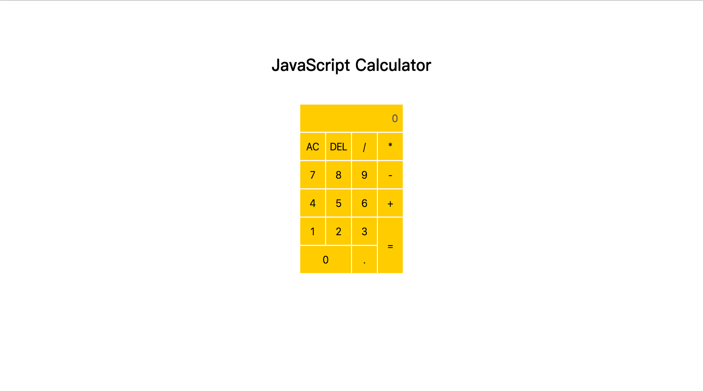

董海娜
生命不息，折腾不止
基本信息
联系方式
邮箱：taosang@sina.cn
手机：183-9239-4051
微信：taosang1992
教育背景
学校：西安文理学院
学历：统招本科
专业：生物科学（2011-2015）
相关链接
- FreeCodeCamp——FCC 上我的主页
- CodePen——在线作品地址
- Github——我的 Github 地址
- 简书——我的博客主发平台
工作经历
Sewell 深圳办公室
2016-10~2017-03 | 技术支持
在职期间，负责Sewell深圳办公室的技术支持工作。与此同时，开始自学前端，今年3月份辞职，在家 All in 学习。
开源中国
2016-04~2016-09 | 项目支持
在职期间，负责开源中国社区主站改版的项目支持工作，写文档，做测试。在这里认识了一位前端小牛朋友，开始对前端这个职业有了了解。
西安丝路软件
2015-04~2016-04 | 项目支持
在职期间，参与了日本巨头 UNICHIKA 的 JavaWeb 移行项目，主要工作是写SQL，分析 80 年代的 PLI／COBOL 等老代码，编写项目文档
掌握的技术
- 会用 PS／Sketch 切图
- 能用 HTML／CSS 完成静态页面制作
- 了解 HTML5／CSS3 新特性，用过其中一些 API，能用CSS3动画作出一些动态页面效果,了解 Flexbox 布局
- 能用原生 JS 或 jQuery 实现一些页面交互效果
- 了解关系型数据库，会用 SQL 进行增删改查;可以看懂 Java,PHP 等后端代码
- 懂得用 Google 和 Stack Overflow 等自行解决遇到的大部分问题
Wikipedia Viewer
- 项目简介与功能
- 使用了jQuery Ajax 请求 API 数据
- 使用了维基百科的 API
- 可以用此 WebApp 查询和显示维基百科查询结果
Random Quote Machine
- 项目简介与功能
- 使用原生JS实现所有功能
- 使用了 Twitter 的分享 API
- 点击「随机古诗词」可以切换诗词及其颜色和背景色
- 点击分享按钮可以分享至 Twitter
Show the local weather
- 项目简介与功能
- 使用了jQuery Ajax 请求 API 数据
- 使用了 Openweather API 和 IP查询 API
- 可以显示用户所在地的天气情况
- 当天气改变时，天气图标和背景图片也会跟着变化
原生 JS 实现番茄钟
- 项目简介与功能
- 使用原生 JS 操作 DOM
- 使用了定时器与清除定时器
- 实现了增加和减少番茄时间／休息时间，并且可以暂停／重置番茄钟
原生 JS 实现简易计算器
- 项目简介与功能
- 使用原生 JS 实现所有功能
- 可以进行加减乘除等基本运算，并且可以重置计算器
可拖拽和移动的 3D 相册
- 项目简介与功能
- 使用了原生 JS 和 CSS3 3D 变形完成所有功能
- 可以使用鼠标拖拽移动相册
CSS 3D 旋转相册
- 项目简介与功能
- 使用CSS3 3D 变形布局
- 使用CSS3 动画实现 3D 相册的转动
Random Quote Machine
- 项目简介与功能
- 使用原生JS实现所有功能
- 使用了 Twitter 的分享 API
- 点击「随机古诗词」可以切换诗词及其颜色和背景色
- 点击分享按钮可以分享至 Twitter
Show the local weather
- 项目简介与功能
- 使用了jQuery Ajax 请求 API 数据
- 使用了 Openweather API 和 IP查询 API
- 可以显示用户所在地的天气情况
- 当天气改变时，天气图标和背景图片也会跟着变化